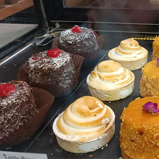
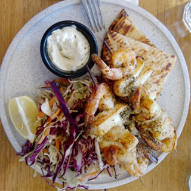
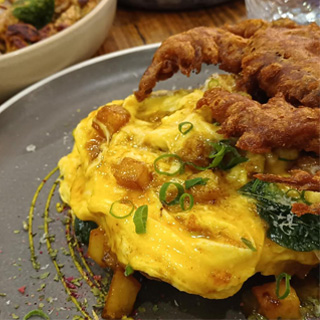
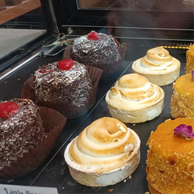
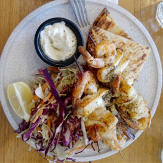
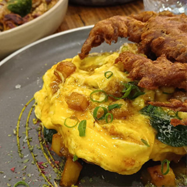
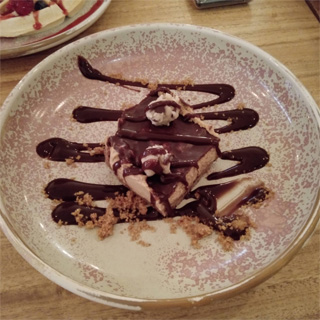
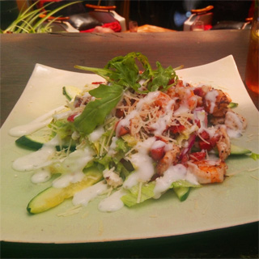
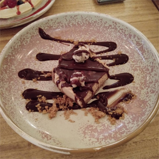
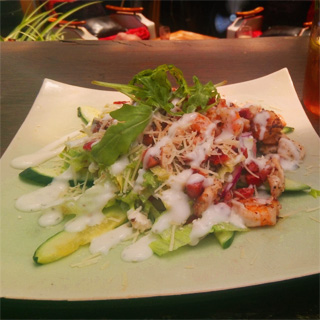

Breakfast Favourites
Native Grain Porridge: A hearty blend of locally-sourced native grains, served with a drizzle of honey and seasonal fruits.
Wild Berry Pancakes: Fluffy pancakes made with organic flour and topped with a medley of wild berries and native fruit compote.
Avocado Toast: Sourdough bread topped with smashed avocado, cherry tomatoes, and native herbs, finished with a sprinkle of lemon zest.
Signature Pastries
Lilly Pilly Muffin: A moist muffin bursting with the flavors of native berries and seeds, perfect for an on-the-go snack.
Eucalyptus Honey Croissant: A buttery croissant filled with locally-sourced eucalyptus honey and almond flakes, baked to golden perfection.
Lemon Myrtle Scone: Tender scones infused with the zesty aroma of lemon myrtle, served with a dollop of whipped cream and native fruit jam.
Artisanal Coffees
Native Bean Espresso: A rich and bold espresso blend made from locally-roasted native beans, with notes of caramel and dark chocolate.
Kakadu Plum Latte: A creamy latte infused with the unique flavor of Kakadu plum syrup, topped with a sprinkle of ground wattleseed.
Bush Tea: A selection of aromatic teas made from native herbs and botanicals, including lemon myrtle, peppermint gum, and wild rosella.
Seasonal Specials
Quandong Tart: A tangy tart made with native quandong fruit, nestled in a buttery pastry crust and finished with a dusting of powdered sugar.
Wattleseed Brownie: A decadent brownie infused with the nutty flavor of wattleseed, topped with a drizzle of dark chocolate ganache.
Native Flower Salad: A vibrant salad featuring a mix of fresh greens, edible native flowers, roasted nuts, and citrus vinaigrette.

 

 

Come join us for a bite!